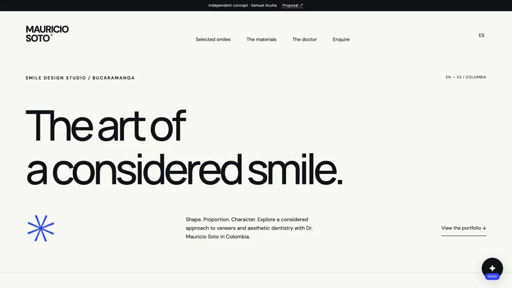
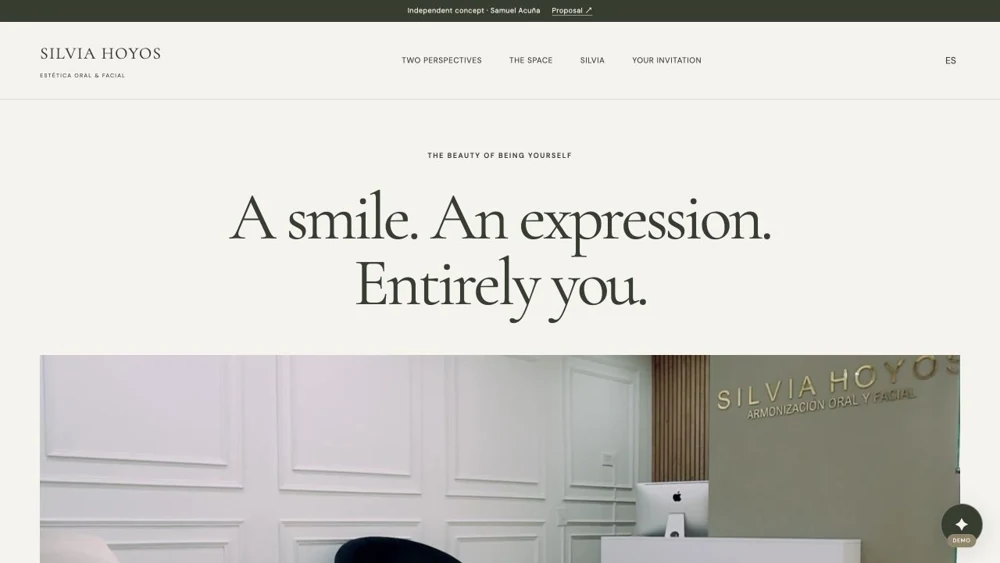
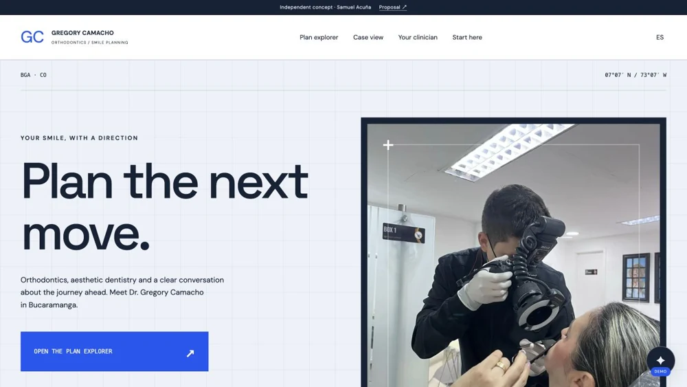
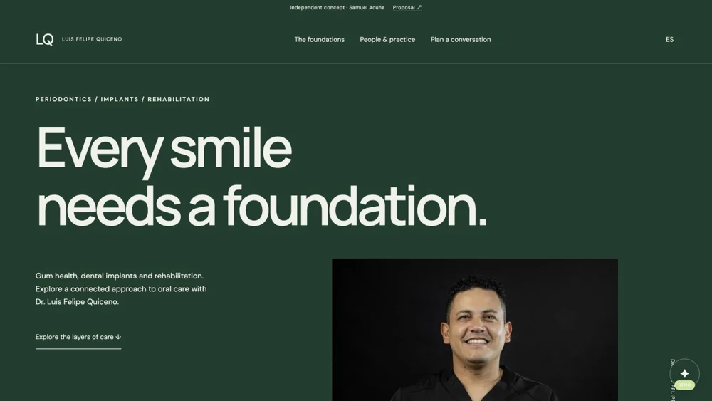
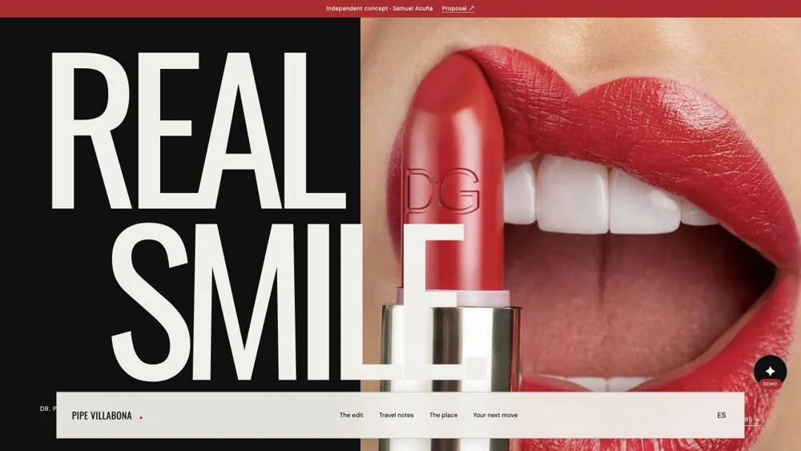
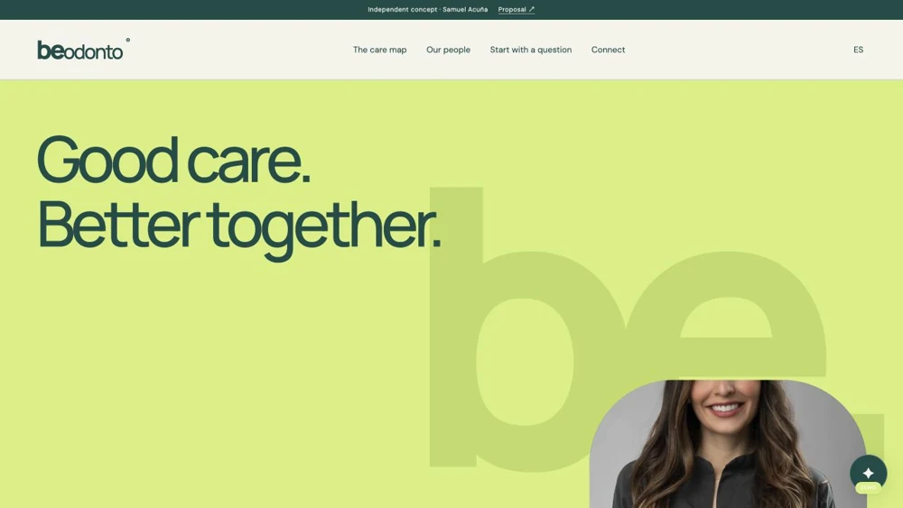
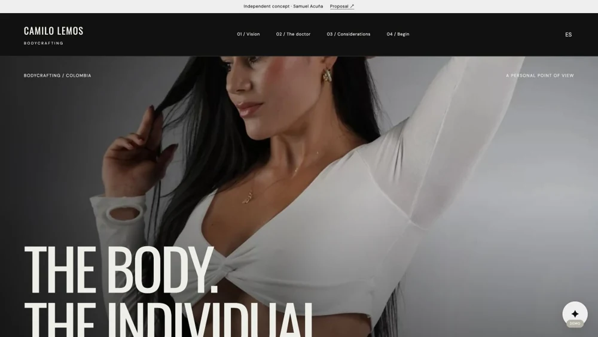
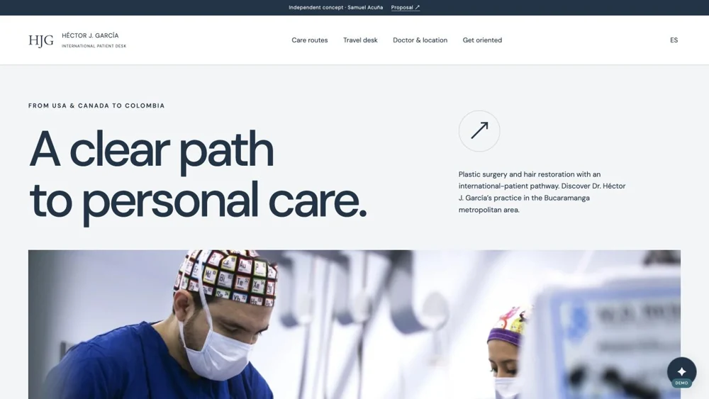

Explorar web ↗01 / Dr. Mauricio SotoODONTOLOGÍA
Estudio de sonrisa
Portafolio numerado, explorador de materiales y una mirada de diseño sobre la estética dental.
Una propuesta para cada especialidad. Experiencias digitales, adquisición desde USA y Canadá y una operación más conectada.
8 webs · 8 propuestas · 8 repositorios
Explorar web ↗Portafolio numerado, explorador de materiales y una mirada de diseño sobre la estética dental.

Explorar web ↗Una revista visual que conecta estética dental, armonización orofacial y los espacios de la consulta.

Explorar web ↗Un explorador interactivo para alinear, diseñar o rehabilitar; planeación con lenguaje visual clínico.

Explorar web ↗Un recorrido desde las encías hasta la rehabilitación, con capítulos que explican las bases del cuidado.

Explorar web ↗Una galería editorial de carillas, navegación inferior y notas de viaje para pacientes internacionales.

Explorar web ↗Una marca colectiva con mapa de especialidades, bloques de color y rehabilitación como punto de encuentro.

Explorar web ↗Una experiencia documental a sangre, video del doctor y capítulos sobre el criterio de un plan individual.

Explorar web ↗Un escritorio de orientación con rutas de cirugía y capilar, y una lista interactiva de coordinación.
Cada propuesta plantea un embudo, responsabilidades, agentes administrativos de IA, contenido, seguimiento y recomendaciones. El alcance se conversa con cada equipo; no se incluyen precios ni compromisos de resultados.
Son conceptos comerciales independientes. Agenda y asistentes son demostraciones: no reservan citas ni envían información de pacientes. Las integraciones reales forman parte del alcance a acordar.